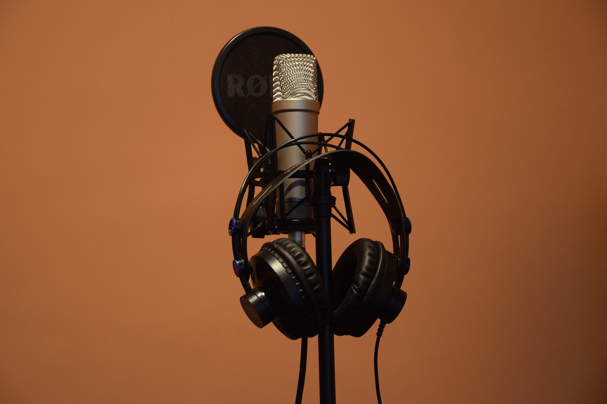

Welcome to the Digital Mediation Podcast Project
Welcome to the Digital Mediation Podcast Project
This project has been designed for C1.2 and C2 students at Escuela Oficial de Idiomas Xauen (Jaén).
Through the creation of podcasts and digital media products, students will develop mediation, interaction, critical thinking and digital competence skills.
The project promotes responsible digital citizenship, safe online communication, collaborative learning and the ethical use of digital resources.
By the end of the project, students will create and publish an original podcast aimed at a real audience while applying mediation strategies and responsible use of digital technologies.
